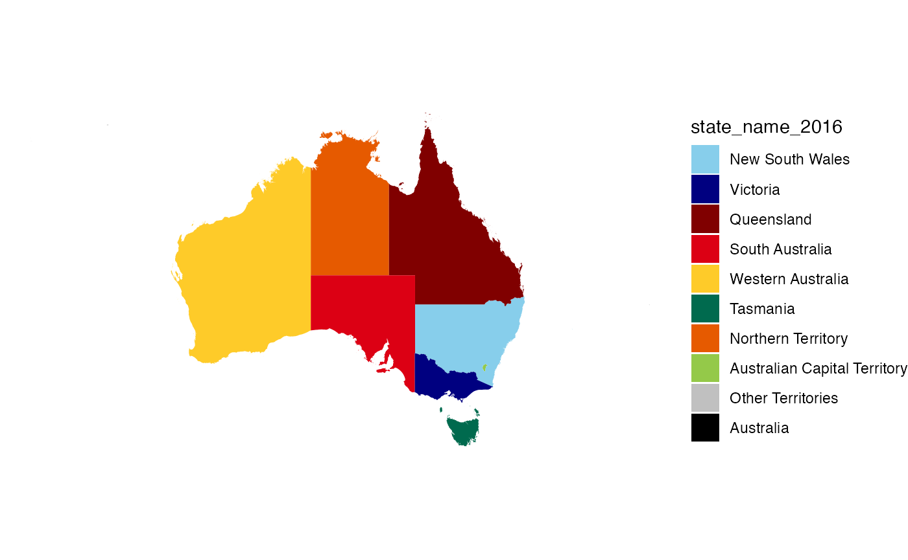

Using ABS structures
Loading the package will lazily load a number of structures, a full list is available in the reference
glimpse(anzsco2009)
#> Rows: 1,180
#> Columns: 11
#> $ anzsco_major_code <chr> "1", "1", "1", "1", "1", "1", "1", "1", "1", "1…
#> $ anzsco_major <chr> "Managers", "Managers", "Managers", "Managers",…
#> $ anzsco_submajor_code <chr> "10", "11", "11", "11", "11", "11", "11", "11",…
#> $ anzsco_submajor <chr> "Managers, nfd", "Chief Executives, General Man…
#> $ anzsco_minor_code <chr> "100", "110", "111", "111", "111", "111", "111"…
#> $ anzsco_minor <chr> "Managers, nfd", "Chief Executives, General Man…
#> $ anzsco_unit_code <chr> "1000", "1100", "1110", "1111", "1112", "1112",…
#> $ anzsco_unit <chr> "Managers, nfd", "Chief Executives, General Man…
#> $ anzsco_occupation_code <chr> "100000", "110000", "111000", "111111", "111211…
#> $ anzsco_occupation <chr> "Managers, nfd", "Chief Executives, General Man…
#> $ skill_level <chr> NA, NA, NA, "1", "1", "1", "1", "1", "1", NA, N…
glimpse(anzsic2006)
#> Rows: 506
#> Columns: 8
#> $ anzsic_division_code <chr> "A", "A", "A", "A", "A", "A", "A", "A", "A", "…
#> $ anzsic_division <chr> "Agriculture, Forestry and Fishing", "Agricult…
#> $ anzsic_subdivision_code <chr> "01", "01", "01", "01", "01", "01", "01", "01"…
#> $ anzsic_subdivision <chr> "Agriculture", "Agriculture", "Agriculture", "…
#> $ anzsic_group_code <chr> "011", "011", "011", "011", "011", "012", "012…
#> $ anzsic_group <chr> "Nursery and Floriculture Production", "Nurser…
#> $ anzsic_class_code <chr> "0111", "0112", "0113", "0114", "0115", "0121"…
#> $ anzsic_class <chr> "Nursery Production (Under Cover)", "Nursery P…
glimpse(anzsic_isic)
#> Rows: 1,143
#> Columns: 4
#> $ anzsic_class_code <chr> "0111", "0111", "0112", "0112", "0113", "0114", "011…
#> $ anzsic_class <chr> "Nursery Production (Under Cover)", "Nursery Product…
#> $ isic_class_code <chr> "0129p", "0130p", "0129p", "0130p", "0130p", "0119p"…
#> $ isic_class <chr> "Growing of other perennial crops", "Plant propagati…
glimpse(asced_foe2001)
#> Rows: 439
#> Columns: 6
#> $ aced_foe_broad_code <chr> "01", "01", "01", "01", "01", "01", "01", "01",…
#> $ aced_foe_broad <chr> "Natural and Physical Sciences", "Natural and P…
#> $ aced_foe_narrow_code <chr> "0100", "0101", "0101", "0101", "0101", "0103",…
#> $ aced_foe_narrow <chr> "Natural and Physical Sciences, nfd", "Mathemat…
#> $ aced_foe_detailed_code <chr> "010000", "010100", "010101", "010103", "010199…
#> $ aced_foe_detailed <chr> "Natural and Physical Sciences, nfd", "Mathemat…
glimpse(asced_qual2001)
#> Rows: 64
#> Columns: 6
#> $ aced_qual_broad_code <chr> "1", "1", "1", "1", "1", "1", "1", "1", "1", "…
#> $ aced_qual_broad <chr> "Postgraduate Degree Level", "Postgraduate Deg…
#> $ aced_qual_narrow_code <chr> "11", "11", "11", "11", "11", "11", "12", "12"…
#> $ aced_qual_narrow <chr> "Doctoral Degree Level", "Doctoral Degree Leve…
#> $ aced_qual_detailed_code <chr> "111", "112", "113", "114", "115", "116", "121…
#> $ aced_qual_detailed <chr> "Higher Doctorate", "Doctorate by Research", "…Objects stored in the absmapsdata
package can be accessed with the read_absmap function:
library(sf) # loaded to handle sf objects
#> Linking to GEOS 3.11.0, GDAL 3.5.3, PROJ 9.1.0; sf_use_s2() is TRUE
read_absmap("sa42016")
#> Simple feature collection with 107 features and 9 fields (with 18 geometries empty)
#> Geometry type: MULTIPOLYGON
#> Dimension: XY
#> Bounding box: xmin: 96.81695 ymin: -43.74048 xmax: 167.9969 ymax: -9.219937
#> Geodetic CRS: WGS 84
#> First 10 features:
#> sa4_code_2016 sa4_name_2016 gcc_code_2016 gcc_name_2016
#> 1 101 Capital Region 1RNSW Rest of NSW
#> 2 102 Central Coast 1GSYD Greater Sydney
#> 3 103 Central West 1RNSW Rest of NSW
#> 4 104 Coffs Harbour - Grafton 1RNSW Rest of NSW
#> 5 105 Far West and Orana 1RNSW Rest of NSW
#> 6 106 Hunter Valley exc Newcastle 1RNSW Rest of NSW
#> 7 107 Illawarra 1RNSW Rest of NSW
#> 8 108 Mid North Coast 1RNSW Rest of NSW
#> 9 109 Murray 1RNSW Rest of NSW
#> 10 110 New England and North West 1RNSW Rest of NSW
#> state_code_2016 state_name_2016 areasqkm_2016 cent_long cent_lat
#> 1 1 New South Wales 51895.563 149.2450 -35.56480
#> 2 1 New South Wales 1681.072 151.2855 -33.30797
#> 3 1 New South Wales 70297.060 148.3558 -33.21697
#> 4 1 New South Wales 13229.758 152.7739 -29.81603
#> 5 1 New South Wales 339363.693 145.0269 -30.98611
#> 6 1 New South Wales 21491.291 150.9849 -32.35481
#> 7 1 New South Wales 1538.919 150.7711 -34.43464
#> 8 1 New South Wales 18851.500 152.3410 -31.56476
#> 9 1 New South Wales 97797.675 144.0434 -34.42275
#> 10 1 New South Wales 99145.916 150.7019 -30.06335
#> geometry
#> 1 MULTIPOLYGON (((150.3113 -3...
#> 2 MULTIPOLYGON (((151.315 -33...
#> 3 MULTIPOLYGON (((150.6107 -3...
#> 4 MULTIPOLYGON (((153.2785 -2...
#> 5 MULTIPOLYGON (((150.1106 -3...
#> 6 MULTIPOLYGON (((152.3165 -3...
#> 7 MULTIPOLYGON (((150.8783 -3...
#> 8 MULTIPOLYGON (((159.0686 -3...
#> 9 MULTIPOLYGON (((147.6165 -3...
#> 10 MULTIPOLYGON (((152.4876 -2...Converting state names and abbreviations
The clean_state() function makes it easy to wrangle
vectors of State names and abbreviations - which might be in different
forms and possibly misspelled.
Let’s start with a character vector that includes some misspelled state names, some correctly spelled state names, as well as some abbreviations both malformed and correctly formed.
x <- c("western Straya", "w. A ", "new soth wailes", "SA", "tazz", "Victoria",
"northn territy")To convert this character vector to a vector of abbreviations for
State names, use clean_state():
clean_state(x)
#> [1] "WA" NA "NSW" "SA" "Tas" "Vic" "NT"If you want full names for the states rather than abbreviations:
clean_state(x, to = "state_name")
#> [1] "Western Australia" NA "New South Wales"
#> [4] "South Australia" "Tasmania" "Victoria"
#> [7] "Northern Territory"By default, clean_state() uses fuzzy or approximate
string matching to match the elements in your character vector to state
names/abbreviations. If you only want to permit exact matching, you can
disable fuzzy matching. This means you will never get false matches, but
you will also fail to match misspelled state names or malformed
abbreviations; you’ll get an NA if no match can be
found.
clean_state(x, fuzzy_match = FALSE)
#> [1] NA NA NA "SA" NA "Vic" NAIf your data is in a data frame, clean_state() works
well within a dplyr::mutate() call:
x_df <- data.frame(state = x, stringsAsFactors = FALSE)
library(dplyr)
x_df %>%
mutate(state_abbr = clean_state(state))
#> state state_abbr
#> 1 western Straya WA
#> 2 w. A <NA>
#> 3 new soth wailes NSW
#> 4 SA SA
#> 5 tazz Tas
#> 6 Victoria Vic
#> 7 northn territy NTThe function clean_state can also return an ‘unofficial’
state/territory colour for use in charts.
clean_state("Queensland", to = "colour")
#> [1] "#800000"The palette palette_state_name_2016 can be used in
ggplot2 for the unofficial colours of states.
read_absmap("state2016") %>%
ggplot() +
geom_sf(aes(fill = state_name_2016), colour = NA) +
scale_fill_manual(values = palette_state_name_2016) +
theme_void()
Australian public holidays
This package includes the auholidays dataset from the Australian
Public Holidays Dates Machine Readable Dataset as well as a helper
function is_holiday:
str(auholidays)
#> tibble [794 × 3] (S3: tbl_df/tbl/data.frame)
#> $ Date : Date[1:794], format: "2021-01-01" "2021-01-26" ...
#> $ Name : chr [1:794] "New Year's Day" "Australia Day" "Canberra Day" "Good Friday" ...
#> $ Jurisdiction: chr [1:794] "ACT" "ACT" "ACT" "ACT" ...
is_holiday('2020-01-01')
#> [1] TRUE
is_holiday('2019-05-27', jurisdictions = c('ACT', 'TAS'))
#> [1] TRUE
h_df <- data.frame(dates = c('2020-01-01', '2020-01-10'))
h_df %>%
mutate(IsHoliday = is_holiday(dates))
#> dates IsHoliday
#> 1 2020-01-01 TRUE
#> 2 2020-01-10 FALSEParsing income ranges
The parse_income_range function provides some tools for
extracting numbers from income ranges commonly used in Australian data.
For example:
parse_income_range("$1-$199 ($1-$10,399)", limit = "lower")
#> [1] 1
parse_income_range("$1-$199 ($1-$10,399)", limit = "upper")
#> [1] 199
parse_income_range("$1-$199 ($1-$10,399)", limit = "mid")
#> [1] 100
parse_income_range("e. $180,001 or more", limit = "upper")
#> [1] Inf
parse_income_range("e. $180,001 or more", limit = "upper", max_income = 300e3)
#> [1] 3e+05
parse_income_range("Nil income")
#> [1] 0
parse_income_range("Negative income")
#> [1] 0
parse_income_range("Negative income", negative_as_zero = FALSE)
#> [1] NA
tibble(income_range = c("Negative income",
"Nil income",
"$1,500-$1,749 ($78,000-$90,999)",
"$1,750-$1,999 ($91,000-$103,999)",
"$2,000-$2,999 ($104,000-$155,999)",
"$3,000 or more ($156,000 or more)")) %>%
mutate(lower = parse_income_range(income_range),
mid = parse_income_range(income_range, limit = "mid"),
upper = parse_income_range(income_range, limit = "upper"))
#> # A tibble: 6 × 4
#> income_range lower mid upper
#> <chr> <dbl> <dbl> <dbl>
#> 1 Negative income 0 0 0
#> 2 Nil income 0 0 0
#> 3 $1,500-$1,749 ($78,000-$90,999) 1500 1625 1749
#> 4 $1,750-$1,999 ($91,000-$103,999) 1750 1875 1999
#> 5 $2,000-$2,999 ($104,000-$155,999) 2000 2500 2999
#> 6 $3,000 or more ($156,000 or more) 3000 Inf Inf